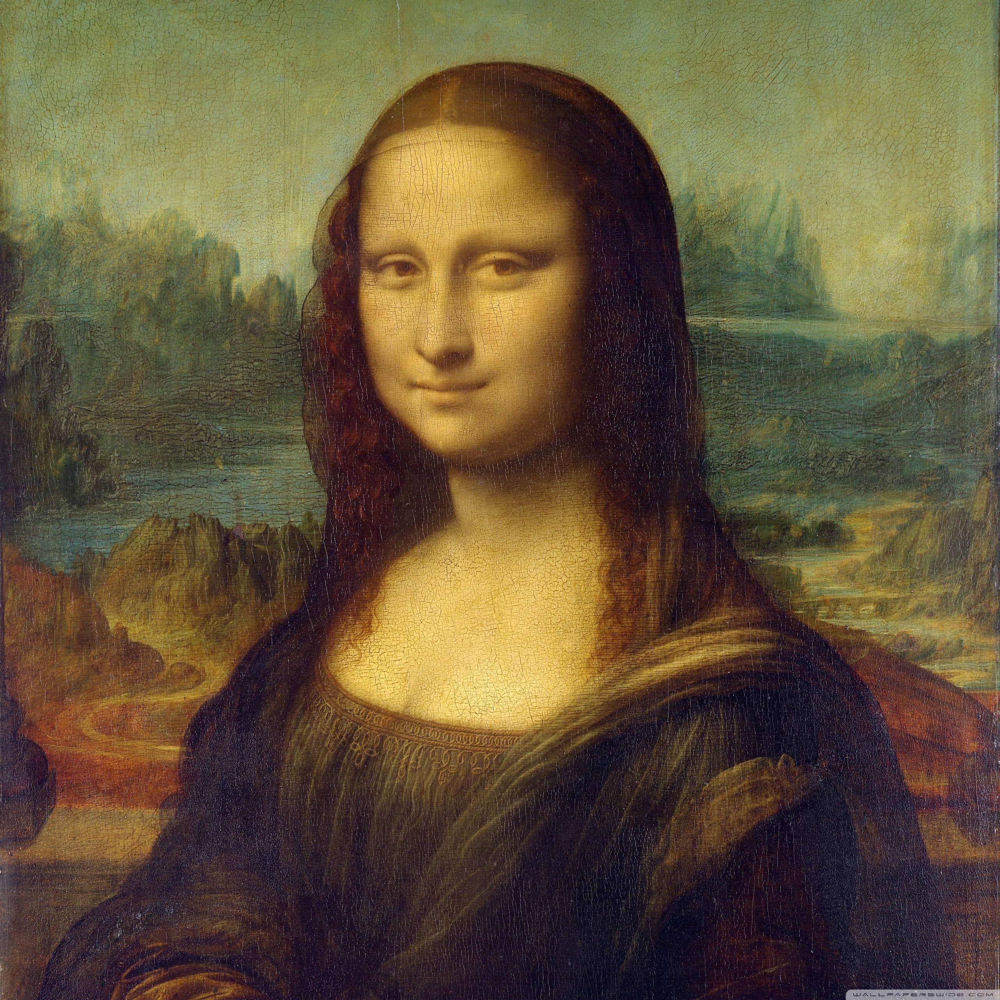

Mona Lisa
por Leonardo da Vinci (1503–1506)

Clique com o botão direito para abrir em nova aba e dar zoom.
Descrição da Obra
A "Mona Lisa", também conhecida como "La Gioconda", é uma das pinturas mais famosas do mundo. Criada por Leonardo da Vinci no início do século XVI, ela retrata uma mulher com um sorriso enigmático e olhar sereno, cuja identidade ainda gera debates entre estudiosos.
A técnica do sfumato — uso suave de transições tonais — é um dos grandes destaques dessa obra renascentista. A paisagem ao fundo adiciona profundidade e contraste à figura central.
Detalhes Técnicos
- Artista: Leonardo da Vinci
- Ano: 1503–1506 (aproximadamente)
- Estilo: Renascimento
- Localização Atual: Museu do Louvre, Paris
- Dimensões: 77 cm × 53 cm
Curiosidades
- Foi roubada do Louvre em 1911 e recuperada dois anos depois.
- É protegida por um vidro à prova de balas.
- O sorriso da Mona Lisa é frequentemente descrito como "misterioso".